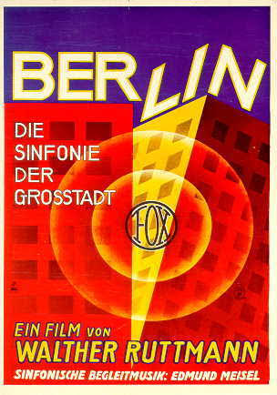

WeimarCinema.org
About
Contact
Acknowledgments
Book Info
Description
Table of Contents
Introduction
Sample Texts
Further Texts in Translation
Documents in Chronological Order
Reviews and Awards
Resources
Online German Films Before 1933
Digitized German Film Books (1903-1933)
Film Journals On Microfilm (1907-1933)
Film Journals Online (1907-1933)
Resources And Archives
Activities
New Publications
New Restorations
Active Blogs
Film Festivals and Conferences
Materials
A Lexicon of Media Concepts
Weimar Classics and Film Theory
Film Dossiers
Syllabi
Films
1895-1918
1919-1926
1927-1933
Essays
September 25, 2015
Film Dossiers

BERLIN. DIE SINFONIE DER GROSSTADT
Explore Film Dossier
Introduction
1927 Materials
City Films for Comparison
City and Cinema
Search for: